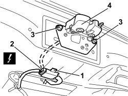

7025B38 BOOT LID LOCK - R+R
- Path
- Procedures > 70 FITTINGS > 7025 COMPARTMENT COVERS > 7025B BOOT LID > 7025B38 BOOT LID LOCK - R+R
- Kind
- repair procedure (removal / refitting; the operation number is the code)
- Applies to
- all engines; all production periods
- Interactive page
- https://sloeber94.github.io/elrnDB/alfa/159/en/#/939011220
Applies to: all engines; all production periods
 Removing
Removing
 Refitting
RefittingApplies to: all engines; all production periods
1. Release the retainer for the electrical connection from the boot lid.
2. Disconnect the electrical connection.
Description | Component |
|---|---|
BOOT LOCK GEARED MOTOR |
3. Undo the bolts.
4. Remove the lock and motor and wiring.

Applies to: all engines; all production periods
- If necessary,
Op. 7025B70 BOOT LOCK MOTOR - R R AND CHECK LOCK SUPPLY LINE
Applies to: all engines; all production periods
Refitting
Removing- Check that the lock and the motor are not damaged.
- If removed,
Op. 7025B70 BOOT LOCK MOTOR - R R AND CHECK LOCK SUPPLY LINE
- Position the lock and motor and wiring.
- Tighten the bolts to the recommended torque.
Component | Fastening | dia | Value (daNm) | Validity |
|---|---|---|---|---|
BOOT LID LOCK | Bolt | M6x16 | 0.7 ÷ 1.1 |
- Connect the electrical connection.
- Attach the retainer for the electrical connection to the boot lid.
- Check that the lock is working.
Topics linked from this page (3)
- 7025B41 BOOT LID LOCK
- 7025B70 BOOT LOCK MOTOR - R R AND CHECK LOCK SUPPLY LINE
- N057 BOOT LOCK GEARED MOTOR
Topics that link to this page (10)
- 70C CHECK ON DOOR LOCK MICROSWITCHES
- 5505B50 BOOT WIRING - R R
- 7025B70 BOOT LOCK MOTOR - R R AND CHECK LOCK SUPPLY LINE
- 7210E54 BOOT
- E2520 GLOVE COMPARTMENT LIGHT - BOOT LIGHT - SUN VISOR LIGHT - WIRING DIAGRAM
- E2520 GLOVE COMPARTMENT LIGHT - BOOT LIGHT - SUN VISOR LIGHT - COMPONENT LOCATION
- E3045 BOOT AND FUEL FLAP OPENING - WIRING DIAGRAM
- E3045 BOOT AND FUEL FLAP OPENING - COMPONENT LOCATION
- E7015 ALARM - WIRING DIAGRAM
- E7015 ALARM - COMPONENT LOCATION